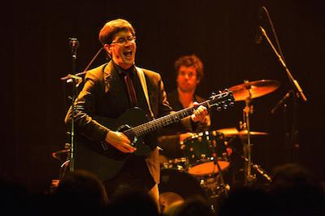

Mountain Goats

The Mountain Goats (stylized "the Mountain Goats") are an American indie folk rock band formed in Claremont, California by singer-songwriter John Darnielle. The band is currently based in Durham, North Carolina. For many years, the sole member of the Mountain Goats was Darnielle despite the plural moniker. Although he remains the core member of the band, he has gradually worked with a variety of collaborators who have included bassist Peter Hughes, drummer Jon Wurster, singer-songwriter Franklin Bruno, bassist and vocalist Rachel Ware, singer-songwriter/producer John Vanderslice, guitarist Kaki King and Annie Clark.[1]Throughout the 1990s, the Mountain Goats were known for producing low-fidelity home recordings (most famously, on a boom box) and releasing recordings in cassette or vinyl 7" formats.[2] Since 2002, the Mountain Goats have adopted a more polished approach, recording studio albums with a full band.[2][3]
Courtesy of Wikipedia